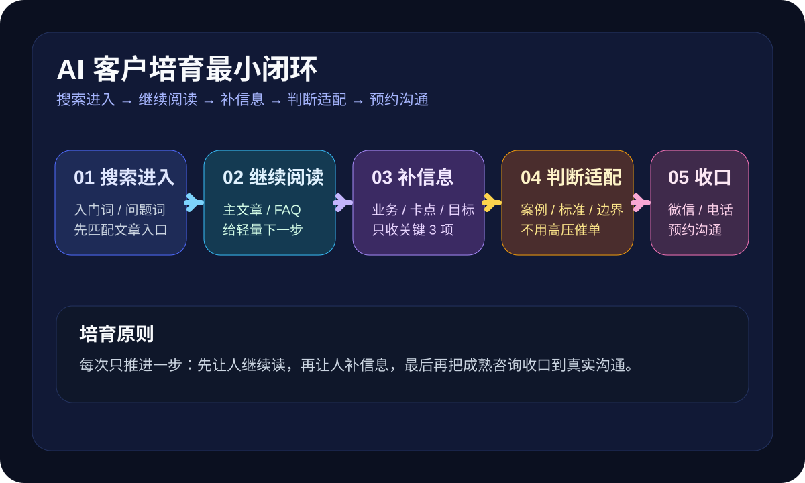

这篇先解决什么
先解决“官网有人来，但还不够成熟”“看过文章却不继续问”“留资之后几天就没动静”“跟进时总怕打扰客户”这几类更现实的问题，再谈更复杂的 CRM、自动化营销和多轮触达。
很多人搜“AI 客户培育怎么做”“AI 线索培育”“官网咨询培育流程”，真实卡点通常不是不会发消息，而是来了咨询之后，只会一口气丢很多介绍，既没有按阶段分内容，也没有把下一步动作讲清楚。对一人公司来说，AI 客户培育真正有价值的地方，不是把每个人都当成马上成交的人，而是把还在犹豫、比较、观察的人一步步养成熟线索，让后面的咨询、报价和成交更顺。

先解决“官网有人来，但还不够成熟”“看过文章却不继续问”“留资之后几天就没动静”“跟进时总怕打扰客户”这几类更现实的问题，再谈更复杂的 CRM、自动化营销和多轮触达。
Harris 的关键词策略和 Semrush 的关键词映射都在强调同一件事：不同搜索词对应不同页面，页面要服务对应意图。放到客户培育上也一样。有人第一次搜“AI 客服怎么开始”，他更需要入门文和 FAQ；有人已经搜到“官网咨询怎么接住”，说明他开始进入比较与准备阶段，需要更具体的方案判断；再往后，才会出现对时间、预算、适配度的咨询。Shopify 对销售漏斗的解释也很直白：真正重要的不是把人都塞进同一个漏斗，而是看清他们在哪一步犹豫、停住、流失。MBA 智库对客户旅程和销售漏斗的定义进一步提醒了一点：客户会经历认知、兴趣、询问、行动、忠诚这些阶段，每个阶段都要有不同的承接方式。对一人公司来说，客户培育的意义就在这里——不是把暂时不成熟的人放弃掉，而是让他在你的文章、FAQ、案例和咨询入口之间，顺着阶段自然走到更成熟的位置。
这 5 步的重点不是做成很重的自动化，而是先让“冷咨询 → 熟咨询”这条路变得更清楚。
客户培育不是从留资表开始，而是从搜索开始。有人搜“AI 内容运营怎么开始”，说明他还在找方向；有人搜“AI 客户筛选怎么做”，说明他已经意识到自己卡在承接；有人搜“AI 客户留存怎么做”，说明他更关心后端复购。这些词背后代表的是不同阶段。Harris 的关键词策略和 Semrush 的关键词映射都强调页面与意图要匹配，所以第一步不是发更多消息，而是先准备不同入口：主文章承接入门词，FAQ 承接高频判断词，解决方案或联系页承接决策词。客户培育的第一层，永远是内容入口的顺序，而不是聊天术。
很多一人公司犯的错，是把所有下一步都设计成“加微信聊聊”。对冷线索来说，这个动作往往太重。更好的做法，是让继续阅读成为轻量推进：看一篇更贴近场景的文章、补一组 FAQ、看一个案例判断表。这样做不是拖慢成交，而是减少对方的心理压力，让他觉得自己是在往前走，而不是被推着走。Shopify 提到漏斗管理的关键，是看到哪里犹豫、哪里掉队；继续阅读就是在“犹豫区”提供一块缓冲带，让对方顺着内容进入下一阶段。
客户培育不是无止境聊天，培育到一定程度必须开始收信息。对一人公司来说，最值得收的通常只有 3 个：你现在做什么业务、当前最卡哪一步、这次最想先解决什么。MBA 智库提到销售漏斗要有真实、持续的数据输入才有指导价值，这里说的就是这个意思。你不需要一上来做复杂问卷，但至少要知道对方处在哪个阶段，否则你永远只能泛泛地陪聊。温线索阶段最适合补信息，因为此时对方已经有一定兴趣，但还没准备进入正式沟通，轻量收信息最容易推进。
很多人以为培育就是定期追问“考虑得怎么样了”，其实这类消息很容易让人退后。更有效的做法，是补一条判断标准、一段案例、一组适合 / 不适合说明，让客户自己更接近判断。比如告诉对方：如果你现在只有零散流量，还没准备好 FAQ 和咨询入口，先看这篇；如果你已经有人来问但接不住，先做筛选；如果你已经有咨询和成交但没复购，先做留存。这样的内容会让客户感觉被理解，而不是被销售。对一人公司来说，这种“判断型培育”比高频催单更稳，因为它更像帮对方做决策整理。
客户培育不是无限循环。只要对方开始问时间、方式、适不适合自己，或者愿意补充更具体的信息，就说明已经接近决策点。这时候最重要的是收口，而不是继续喂内容。给一个明确的动作：加微信、电话沟通、预约 15 分钟判断。客户培育真正值钱的不是把人养得很久，而是在合适的时点把人自然送进下一步。对一人公司来说，这一步越清楚，前面的内容和跟进才不会白做。
培育的核心是推进判断，不是增加噪音。发得越多，不一定越有效。
刚了解的人、正在比较的人、准备沟通的人，本来就该看到不同内容。
如果读完没有 FAQ、案例或联系入口，培育就会停在半路。
客户真正需要的往往是“我现在适合做哪一步”，而不是“你考虑得怎样了”。
到了该沟通的时候还在继续喂内容，会把原本成熟的咨询再次拖回冷区。
如果你还没把冷、温、热三层分清楚，先看这篇，把培育前的分流做稳。
如果你想继续往“跟进节奏和推进动作怎么做”这条线再走一步，可以接着看这篇。
如果你想把文章、FAQ、线索筛选和客户培育接成一条真实可跑的链路，可以直接沟通现状。
如果你现在也在做一人公司的官网、内容、FAQ 或咨询承接，可以把现状发来，我们先帮你拆成最小可执行清单。